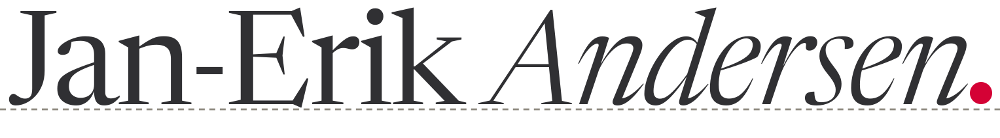

Newsreader, aufrecht Gewicht 380, Andersen kursiv Gewicht 340, Laufweite −0,018 em, alles in Tinte #303033. Einziges Rot ist der runde Schlusspunkt #d40235 (0,17 em, in der Signatur 0,2 em) auf der Grundlinie. Die Lettern stehen auf der gestrichelten Falzlinie #8f8a80. Alle Texte sind in Pfade umgewandelt; die SVGs brauchen keine Schrift.
marke.svg
marke-klein.svgmarke-signatur.svg · marke-signatur.png (2×)favicon.svg · favicon-32.png · favicon-16.png · apple-touch-icon.png (180)| Schriftgröße | Falz | Punkt | Datei |
|---|---|---|---|
| ab 40 px (Plakat, Eröffnung, Titel) | ja, 0,014 em, gestrichelt | 0,17 em | marke.svg |
| 18 bis 40 px (Kopfzeile, 20 px) | ja, fest 1 px | 0,17 em | marke-klein.svg |
| unter 18 px (Signatur, Fußzeile) | entfällt | 0,2 em | marke-signatur.svg / .png |
| Tab, Lesezeichen (16 bis 32 px) | entfällt | Zeichen „a“ mit Punkt | favicon.svg / .png |